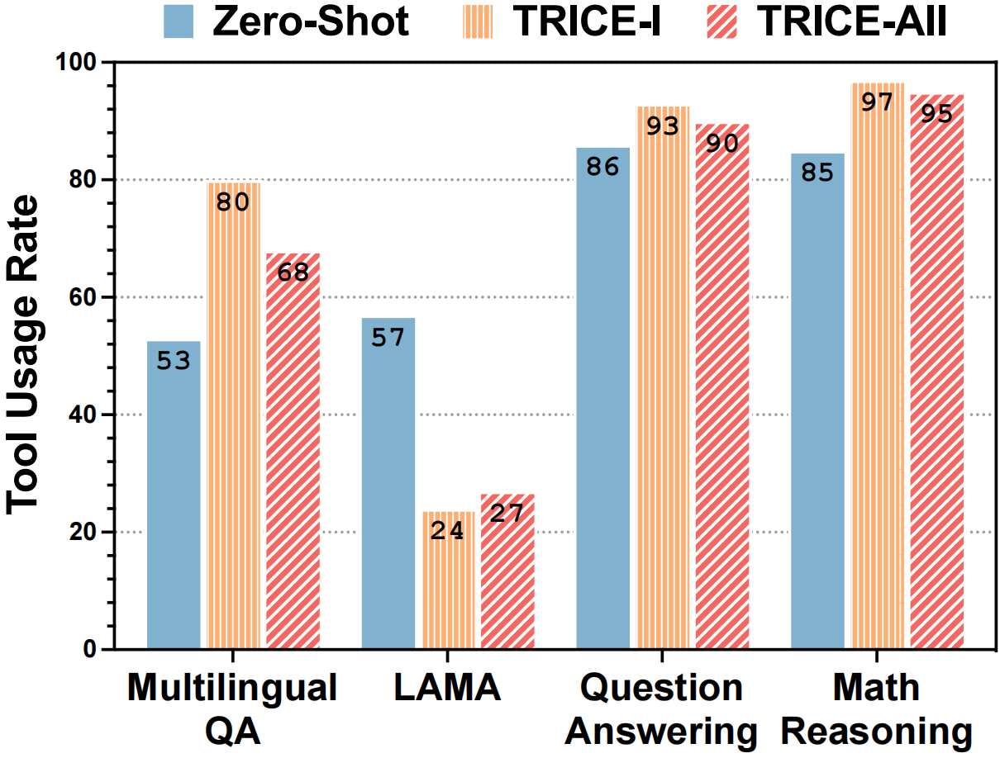

Framework Design

The overview of our proposed framework TRICE.
-
Training Stage I: Behavior Cloning. During the behavior cloning stage, we aim to enable the LLM to master the schema of tool API calls and develop preliminary skills in selectively utilizing tools. Due to the limited availability of existing tool learning datasets, we leverage pseudo-labels for tool API calls generated by ChatGPT to fine-tune (instruct-tuning) the model.
-
Training Stage II: RLEF (Reinforcement Learning with Execution Feedback). We continue to reinforce our model obtained in stageIwith execution feedback by steering it to align with desirable candidate responses. For each question q, we have k different candidate responses yi (1 ≤ i ≤ k) marshaled from other LLMs (e.g. ChatGPT, LLaMA) or human experts.
We apply a reward strategy R to score each yi with ri = R(a, yi) where a is the gold answer of question q.
Our goal is to instruct the model to determine the more desirable response by aligning the LM with scores {ri}k.
Main Results

Performance of TRICE across various tasks with different backbone models. Zero-Shot: models are directly evaluated without training. During this process, the model does not rely on tools. TRICE-Split: models are trained separately for each task. TRICE-Mix: models are trained by combining training data from all tasks.

Performance to unseen datasets and tools.
-
Single Tool Learning. From the rows labeled TRICE-Split, it is evident that training by TRICE, Alpaca and Vicuna perform on par with the GPT-3.5 baseline, exhibiting only a slight decrease of 1.3% and 0.4% on average, respectively.
Moreover, across all backbone models, TRICE-Split demonstrates significant improvements compared to the zero-shot setting, 14.7% with ChatGLM, 18.1% with Alpaca, and 14.0% with Vicuna, indicating that TRICE consistently empowers LMs to use tools effectively, irrespective of the underlying model architecture and scale (ChatGLM-6B is encoder-decoder, while Alpaca-7B and Vicuna-7B are decoder-only).
-
Multiple Tool Learning. As indicated in the rows labeled TRICE-Mix, training across tasks achieves state-of-the-art performance by further surpassing the TRICE-Split with an average score gain ranging from 4.2% to 4.5% across different models.
Meanwhile, both Alpaca and Vicuna outperform GPT-3.5, exhibiting improvements of 2.9% and 4.1%, respectively.
These results highlight the potential of TRICE in multi-tool learning, which paves the way for expanding the capabilities of LLMs to handle more complex and diverse types of tools.
-
Generalization of Tool Learning. We evaluate Vicuna on two math reasoning datasets (MultiArith and AddSub) as well as one LAMA dataset (SQuAD), in addition to previously examined datasets.
Our approach enables continuous optimization of the model's performance on unseen datasets, with TRICE-Mix yielding superior results compared to TRICE-Split.
This suggests that TRICE equips the model with general tool usage capabilities.
Furthermore, we steer the model towards unseen tools by simply modifying the instructions.
We present the performance of Vicuna TRICE-Mix augmented by a retriever on HotpotQA which demonstrates an improvement of 7.6%.
Despite the disparities between GPT-3.5 on certain datasets, these findings highlight the promising potential of multi-tool training based on TRICE for facilitating the generalization of tool learning.
Analysis

Ablation Study: performance of TRICE across all tasks at different training stages. TRICE-I: only train by Behavior Cloning (instruction-tuning) stage. TRICE-II: only train by RLEF (reinforcement learning with execution feedback) stage. TRICE-All: train by both TRICE-I and TRICE-II.
Ablation Study. It is evident that only trained in stage I, the model acquires efficacious tool usage capabilities, resulting in a substantial performance improvement compared to Zero-Shot.
Upon further training in stage II, the model experiences additional performance enhancements in both the Split and Mix training settings.
However, the results obtained solely from training in stage II are not satisfactory, indicating that the initial tool generation ability bestowed upon the model in stage I is crucial for more stable training with reinforcement learning.

Comparison of tool use rate among different training stages. In the Zero-Shot stage, we consider a need for tools when the model reaches a wrong answer.
Selective Tool Usage. We notice that after the behavior cloning stage, the model's reliance on tools has significantly deepened on most tasks.
This indicates that the model effectively learns the pattern of tool usage in stage I. Still, due to the imbalanced data distribution regarding the presence or absence of tools in the training set, supervised fine-tuning tends to make the model overly dependent on tools.
However, after training in stage II, the model not only shows performance improvement but also visibly reduces its dependency on tools, which illustrates that the execution feedback can help mitigate the model's excessive reliance on tools and alleviate error propagation in tool usage.
Moreover, it cannot be ignored that the fluctuation of LAMA differs from others.
The decision-making process for invoking the QA model poses challenges, leading to insufficient tool learning during stage I.
The improvement in tool usage rate during stage II implies that the execution feedback can help address the issue of inadequate tool learning.
The above two phenomena highlight the validity of TRICE for selective tool usage.

Case study. We mainly show the responses and predictions of stages I and All.
Case Study. Case 1 suggests that stage II can alleviate the insufficient tool learning in stage I, urging the model to seek assistance from tools for questions it struggles to answer.
Though stage I equips the model with a certain level of tool generation capability, it may not excel in making optimal decisions about the tool's input, as shown in Case 2.
Stage II mitigates this limitation and enhances the accuracy of tool use.
Case 3 confirms that our proposed method enables the model to use tools judiciously.
In Case 4, despite having the same tool invocation in both stages I and II, the model may generate completely opposite answers. This indicates that stage II can further optimize the model's ability to leverage the return results of tools.
However, as shown in Case 5, our model still exhibits certain flaws leading to errors in tool usage.
We speculate that this could be attributed to the scale of our backbone models, which generally range from 6-7B, potentially limiting their tool learning ability.